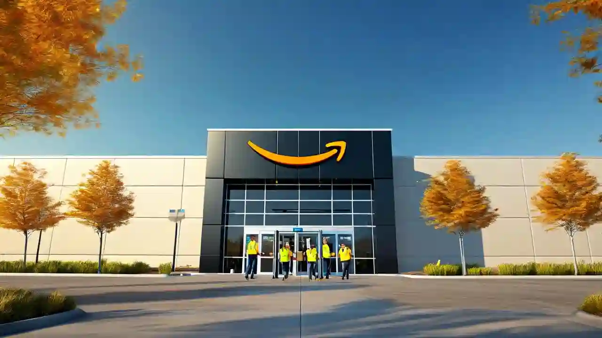

About MSP8
MSP8 is a North America Amazon Sort Center located in Woodbury, MN. It launched in August of 2022 as a Last
Mile Sort Center. It's a little over 500,000 square feet in size and has the ability to process more than
300,000 Amazon packages per day!
What does MSP8 do?
As a Last Mile Sort Center (LMSC), it distributes customer packages primarily to the
United States Postal Service network, which serves as the end-point delivery service provider for MSP8's
geographic
customer scope (hence the "Last Mile" nomenclature). While MSP8 is considered to be a LMSC, in Amazon's
larger supply chain network, it fits within the Middle
Mile scope as part of Amazon's transportation network. We use innovative technology to provide the very best
service for our customers!